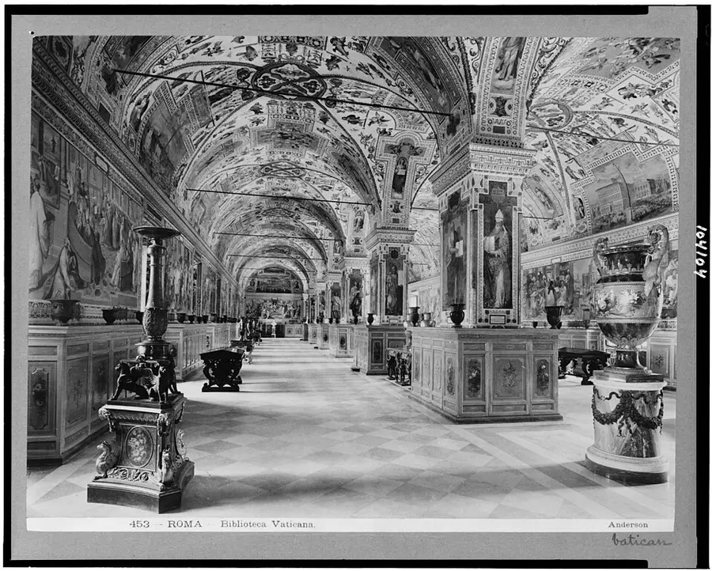

DOSSIER 01 · FICTION
SALVATORE VENTRESCA
The archivist
A brother working inside the Vatican archive. His discovery sets the investigation in motion.
A record dated in the future. A death in the Vatican archive. A machine that may decide who has the last word.
01 / CINEMATIC EXPERIENCE
A twelve-second animated introduction to the world of the novel. Motion plays only where your device settings permit it.
A twelve-second animated introduction to the world of the novel. Motion plays only where your device settings permit it.
02 / BOOK ONE
Discover Book One in digital and print editions. A three-dimensional book presentation; availability depends on your Amazon marketplace.
Kindle · $3.99 · Paperback · $14.99 · Hardcover · In review
03 / THE STORY WORLD
Historical places meet a fictional conspiracy. The images of real locations are illustrative; the technology and events belong to the novel.

DOMINUS · CHARACTER STUDY
Three lives. One impossible file. A cinematic character study from the world of DOMINUS.
04 / CHARACTER FILES
Three lives converge around a record that should not exist. Each holds a different piece of the truth.
The archivist
A brother working inside the Vatican archive. His discovery sets the investigation in motion.
The theologian
A theologian and linguist drawn into a conflict between evidence, interpretation and institutional authority.
The metrologist
A specialist in measurement and verification who follows the technical trail behind the anomaly.
05 / INSIDE THE NOVEL
An authentic excerpt from Chapter One of the English manuscript, not a retelling.
The Vatican · Restricted vault of the Vatican Apostolic Archive · 03:17, June 12, 2035
The second click was quieter than the first. First the mechanical bolt tripped—heavy, forged, put in before electricity ever reached this wing. Then the solenoid of the electromagnetic lock answered—a short, dry, modern sound laid over the old one.
Above the door, the OCCUPATO indicator lit up. Brother Salvatore Ventresca kept his hand on the steel handle until the footsteps in the corridor died away. His palm felt the cold of the metal through the thin leather of his glove. Everything here was cold: steel, stone, air held at fifteen degrees for the sake of paper, not people.
Excerpt from Chapter One · DOMINUS: The Vatican Protocol. Book One: Schism
06 / THE QUESTION
An impossible archive record. A theological investigation. A question no machine should settle on humanity's behalf.